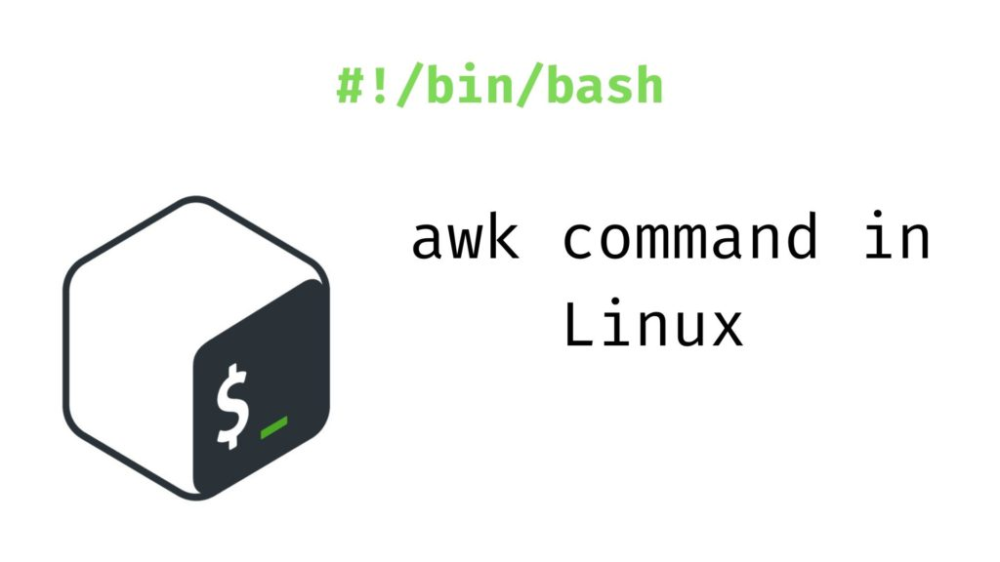

I. 主理人说（提取日志/捕获&提交异常IP）
提取access.log 一定时间段内的日志可参考下文：
提交异常IP到Cloudflare：
II. 命令行工具介绍（awk/sort/uniq）
sort、uniq、awk命令；awk 可以提取某个多行文本某一列的值，sort 可以对多行文本进行重新排序（如依照数值的大小排序；），uniq 可以对多行文本进行重复次数统计；
awk 命令介绍

awk是一种编程语言，用于在linux/unix下对文本和数据进行处理。数据可以来自标准输入(stdin)、一个或多个文件，或其它命令的输出。它支持用户自定义函数和动态正则表达式等先进功能，是linux/unix下的一个强大编程工具。它在命令行中使用，但更多是作为脚本来使用。awk有很多内建的功能，比如数组、函数等，这是它和C语言的相同之处，灵活性是awk最大的优势。
之所以叫 AWK 是因为其取了三位创始人 Alfred Aho，Peter Weinberger, 和 Brian Kernighan 的 Family Name 的首字符。
打印每一行的第二和第三个字段：
awk '{ print $2,$3 }' filename$n 当前记录的第n个字段，比如n为1表示第一个字段，n为2表示第二个字段。
$0 这个变量包含执行过程中当前行的文本内容。awk运算与判断
关系运算符
| 运算符 | 描述 |
|---|---|
| < <= > >= != == | 关系运算符 |
例：
awk 'BEGIN{a=11;if(a >= 9){print "ok";}}'
ok或等价于
awk '{if($1>'3') print $2}' filename 即如果$1字段对应的值大于3则返回结果值等于$2对应的值；
cat example.txt
4 99
5 101
1 3
awk '{if($1>'3') print $2}' example.txt
99
101$n 当前记录的第n个字段，比如n为1表示第一个字段，n为2表示第二个字段。 via awk命令；awk命令_Linux awk 命令用法详解：文本和数据进行处理的编程语言.pdf
sort命令
sort命令是在Linux里非常有用，它将文件进行排序，并将排序结果标准输出。sort命令既可以从特定的文件，也可以从stdin中获取输入。
语法
sort(选项)(参数)选项
-b：忽略每行前面开始出的空格字符；
-c：检查文件是否已经按照顺序排序；
-d：排序时，处理英文字母、数字及空格字符外，忽略其他的字符；
-f：排序时，将小写字母视为大写字母；
-i：排序时，除了040至176之间的ASCII字符外，忽略其他的字符；
-m：将几个排序号的文件进行合并；
-M：将前面3个字母依照月份的缩写进行排序；
-n：依照数值的大小排序；
-o<输出文件>：将排序后的结果存入制定的文件；
-r：以相反的顺序来排序；
-t<分隔字符>：指定排序时所用的栏位分隔字符；
+<起始栏位>-<结束栏位>：以指定的栏位来排序，范围由起始栏位到结束栏位的前一栏位。sort -n filenamevia sort命令；sort命令_Linux sort 命令用法详解：将文件进行排序并输出.pdf；
uniq命令
uniq命令用于报告或忽略文件中的重复行，一般与sort命令结合使用。
语法
uniq(选项)(参数)选项
-c或——count：在每列旁边显示该行重复出现的次数；
-d或--repeated：仅显示重复出现的行列；
-f<栏位>或--skip-fields=<栏位>：忽略比较指定的栏位；
-s<字符位置>或--skip-chars=<字符位置>：忽略比较指定的字符；
-u或——unique：仅显示出一次的行列；
-w<字符位置>或--check-chars=<字符位置>：指定要比较的字符。参数
输入文件：指定要去除的重复行文件。如果不指定此项，则从标准读取数据；
输出文件：指定要去除重复行后的内容要写入的输出文件。如果不指定此选项，则将内容显示到标准输出设备（显示终端）。
统计各行在文件中出现的次数：
sort file.txt | uniq -cvia uniq命令；uniq命令_Linux uniq 命令用法详解：报告或忽略文件中的重复行.pdf
III. 应用场景（捕获access.log日志里的异常IP）
假设我们已经提取出了相应日志：假设对应日志文件名为1min-access.log，其内容如下；
219.25.120.201 - - [06/Apr/2021:09:20:10 +0800] "GET //feed HTTP/1.1" 200 27401 "https://limbopro.com//feed" "FreshRSS/1.18.0 (Linux; https://freshrss.org)"
23.116.47.198 - - [06/Apr/2021:09:20:13 +0800] "GET /archives/10713.html HTTP/1.1" 200 25543 "https://www.google.com/" "Mozilla/5.0 (Windows NT 10.0; Win64; x64) AppleWebKit/537.36 (KHTML, like Gecko) Chrome/89.0.4389.114 Safari/537.36"
128.162.142.226 - - [06/Apr/2021:09:20:14 +0800] "GET /Adblock4limbo.list HTTP/1.1" 200 3068 "-" "Go-http-client/1.1"
223.242.140.34 - - [06/Apr/2021:09:20:25 +0800] "GET /archives/3629.html HTTP/1.1" 200 35789 "https://www.google.co.jp/" "Mozilla/5.0 (Macintosh; Intel Mac OS X 10_15_6) AppleWebKit/605.1.15 (KHTML, like Gecko) Version/14.0.3 Safari/605.1.15"
252.157.251.20 - - [06/Apr/2021:09:20:27 +0800] "GET /865.html HTTP/1.1" 200 37710 "-" "Mozilla/5.0 (Linux; U; Android 10; zh-Hans-CN; PCT-AL10 Build/HUAWEIPCT-AL10) AppleWebKit/537.36 (KHTML, like Gecko) Version/4.0 Chrome/78.0.3904.108 Quark/4.8.3.173 Mobile Safari/537.36"
22.247.181.29 - - [06/Apr/2021:09:20:33 +0800] "GET /feed/ HTTP/1.1" 200 27402 "https://limbopro.com/" "Mozilla/5.0 (compatible; inoreader.com; 27 subscribers)"
203.116.47.198 - - [06/Apr/2021:09:20:35 +0800] "GET /btsearch.html HTTP/1.1" 200 5043 "https://limbopro.com/" "Mozilla/5.0 (Windows NT 10.0; Win64; x64) AppleWebKit/537.36 (KHTML, like Gecko) Chrome/89.0.4389.114 Safari/537.36"
203.157.251.10 - - [06/Apr/2021:09:20:39 +0800] "GET /category/NSFW/ HTTP/1.1" 200 15891 "-" "Mozilla/5.0 (Linux; U; Android 10; zh-Hans-CN; PCT-AL10 Build/HUAWEIPCT-AL10) AppleWebKit/537.36 (KHTML, like Gecko) Version/4.0 Chrome/78.0.3904.108 Quark/4.8.3.173 Mobile Safari/537.36"
203.157.251.21 - - [06/Apr/2021:09:20:46 +0800] "HEAD / HTTP/1.1" 200 0 "-" "curl/7.68.0"
203.187.252.21 - - [06/Apr/2021:09:21:01 +0800] "GET /feed HTTP/1.1" 200 27401 "-" "Mozilla/5.0 (Windows NT 10.0; Win64; x64) AppleWebKit/537.36 (KHTML, like Gecko) Chrome/77.0.3837.0 Safari/537.36 Edg/77.0.211.2"
34.41.212.26 - - [06/Apr/2021:09:21:02 +0800] "HEAD / HTTP/1.1" 200 0 "-" "curl/7.68.0"
35.10.14.41 - - [06/Apr/2021:09:21:05 +0800] "GET /Adblock4limbo.list HTTP/1.1" 200 3068 "-" "Quantumult%20X/1.0.20 (iPhone12,3; iOS 14.4.2)"
35.40.214.66 - - [06/Apr/2021:09:21:05 +0800] "GET /Adblock4limbo.conf HTTP/1.1" 200 12292 "-" "Quantumult%20X/1.0.20 (iPhone12,3; iOS 14.4.2)"
203.182.140.34 - - [06/Apr/2021:09:21:11 +0800] "GET /archives/11773.html HTTP/1.1" 200 29060 "https://limbopro.com/archives/3629.html" "Mozilla/5.0 (Macintosh; Intel Mac OS X 10_15_6) AppleWebKit/605.1.15 (KHTML, like Gecko) Version/14.0.3 Safari/605.1.15"
242.57.200.186 - - [06/Apr/2021:09:21:14 +0800] "GET /Adblock4limbo.list HTTP/1.1" 200 3068 "-" "Quantumult%20X/1.0.20 (iPad11,1; iOS 14.4.1)"
242.57.200.186 - - [06/Apr/2021:09:21:14 +0800] "GET /Adblock4limbo.list HTTP/1.1" 200 3068 "-" "Quantumult%20X/1.0.20 (iPad11,1; iOS 14.4.1)"
242.57.200.186 - - [06/Apr/2021:09:21:14 +0800] "GET /Adblock4limbo.list HTTP/1.1" 200 3068 "-" "Quantumult%20X/1.0.20 (iPad11,1; iOS 14.4.1)"
213.157.251.2 - - [06/Apr/2021:09:21:15 +0800] "GET /archives/15154.html?_pjax=%23content HTTP/1.1" 200 23037 "https://limbopro.com/category/NSFW/" "Mozilla/5.0 (Linux; U; Android 10; zh-Hans-CN; PCT-AL10 Build/HUAWEIPCT-AL10) AppleWebKit/537.36 (KHTML, like Gecko) Version/4.0 Chrome/78.0.3904.108 Quark/4.8.3.173 Mobile Safari/537.36"
213.157.251.2 - - [06/Apr/2021:09:21:15 +0800] "GET /archives/15154.html?_pjax=%23content HTTP/1.1" 200 23037 "https://limbopro.com/category/NSFW/" "Mozilla/5.0 (Linux; U; Android 10; zh-Hans-CN; PCT-AL10 Build/HUAWEIPCT-AL10) AppleWebKit/537.36 (KHTML, like Gecko) Version/4.0 Chrome/78.0.3904.108 Quark/4.8.3.173 Mobile Safari/537.36"
229.57.220.156 - - [06/Apr/2021:09:21:19 +0800] "GET /Adblock4limbo.conf HTTP/1.1" 200 12292 "-" "Quantumult%20X/1.0.20 (iPad11,1; iOS 14.4.1)"
145.176.190.152 - - [06/Apr/2021:09:21:25 +0800] "GET /archives/clashA.html HTTP/1.1" 200 25177 "https://www.google.com/" "Mozilla/5.0 (Linux; Android 10; ONEPLUS A6000) AppleWebKit/537.36 (KHTML, like Gecko) Chrome/89.0.4389.105 Mobile Safari/537.36"
223.147.211.21 - - [06/Apr/2021:09:21:34 +0800] "GET /category/by-nc-sa.png HTTP/1.1" 404 1707 "https://limbopro.com/category/NSFW/" "Mozilla/5.0 (Linux; U; Android 10; zh-Hans-CN; PCT-AL10 Build/HUAWEIPCT-AL10) AppleWebKit/537.36 (KHTML, like Gecko) Version/4.0 Chrome/78.0.3904.108 Quark/4.8.3.173 Mobile Safari/537.36"
223.57.111.134 - - [06/Apr/2021:09:21:42 +0800] "GET /archives/15154.html?_pjax=%23content HTTP/1.1" 200 23037 "https://limbopro.com/category/NSFW/" "Mozilla/5.0 (Linux; U; Android 10; zh-Hans-CN; PCT-AL10 Build/HUAWEIPCT-AL10) AppleWebKit/537.36 (KHTML, like Gecko) Version/4.0 Chrome/78.0.3904.108 Quark/4.8.3.173 Mobile Safari/537.36"
219.25.120.201 - - [06/Apr/2021:09:20:10 +0800] "GET //feed HTTP/1.1" 200 27401 "https://limbopro.com//feed" "FreshRSS/1.18.0 (Linux; https://freshrss.org)"
23.116.47.198 - - [06/Apr/2021:09:20:13 +0800] "GET /archives/10713.html HTTP/1.1" 200 25543 "https://www.google.com/" "Mozilla/5.0 (Windows NT 10.0; Win64; x64) AppleWebKit/537.36 (KHTML, like Gecko) Chrome/89.0.4389.114 Safari/537.36"
128.162.142.226 - - [06/Apr/2021:09:20:14 +0800] "GET /Adblock4limbo.list HTTP/1.1" 200 3068 "-" "Go-http-client/1.1"
223.242.140.34 - - [06/Apr/2021:09:20:25 +0800] "GET /archives/3629.html HTTP/1.1" 200 35789 "https://www.google.co.jp/" "Mozilla/5.0 (Macintosh; Intel Mac OS X 10_15_6) AppleWebKit/605.1.15 (KHTML, like Gecko) Version/14.0.3 Safari/605.1.15"
252.157.251.20 - - [06/Apr/2021:09:20:27 +0800] "GET /865.html HTTP/1.1" 200 37710 "-" "Mozilla/5.0 (Linux; U; Android 10; zh-Hans-CN; PCT-AL10 Build/HUAWEIPCT-AL10) AppleWebKit/537.36 (KHTML, like Gecko) Version/4.0 Chrome/78.0.3904.108 Quark/4.8.3.173 Mobile Safari/537.36"
22.247.181.29 - - [06/Apr/2021:09:20:33 +0800] "GET /feed/ HTTP/1.1" 200 27402 "https://limbopro.com/" "Mozilla/5.0 (compatible; inoreader.com; 27 subscribers)"
203.116.47.198 - - [06/Apr/2021:09:20:35 +0800] "GET /btsearch.html HTTP/1.1" 200 5043 "https://limbopro.com/" "Mozilla/5.0 (Windows NT 10.0; Win64; x64) AppleWebKit/537.36 (KHTML, like Gecko) Chrome/89.0.4389.114 Safari/537.36"
203.157.251.10 - - [06/Apr/2021:09:20:39 +0800] "GET /category/NSFW/ HTTP/1.1" 200 15891 "-" "Mozilla/5.0 (Linux; U; Android 10; zh-Hans-CN; PCT-AL10 Build/HUAWEIPCT-AL10) AppleWebKit/537.36 (KHTML, like Gecko) Version/4.0 Chrome/78.0.3904.108 Quark/4.8.3.173 Mobile Safari/537.36"
203.157.251.21 - - [06/Apr/2021:09:20:46 +0800] "HEAD / HTTP/1.1" 200 0 "-" "curl/7.68.0"
203.187.252.21 - - [06/Apr/2021:09:21:01 +0800] "GET /feed HTTP/1.1" 200 27401 "-" "Mozilla/5.0 (Windows NT 10.0; Win64; x64) AppleWebKit/537.36 (KHTML, like Gecko) Chrome/77.0.3837.0 Safari/537.36 Edg/77.0.211.2"
34.41.212.26 - - [06/Apr/2021:09:21:02 +0800] "HEAD / HTTP/1.1" 200 0 "-" "curl/7.68.0"
35.10.14.41 - - [06/Apr/2021:09:21:05 +0800] "GET /Adblock4limbo.list HTTP/1.1" 200 3068 "-" "Quantumult%20X/1.0.20 (iPhone12,3; iOS 14.4.2)"
35.40.214.66 - - [06/Apr/2021:09:21:05 +0800] "GET /Adblock4limbo.conf HTTP/1.1" 200 12292 "-" "Quantumult%20X/1.0.20 (iPhone12,3; iOS 14.4.2)"
203.182.140.34 - - [06/Apr/2021:09:21:11 +0800] "GET /archives/11773.html HTTP/1.1" 200 29060 "https://limbopro.com/archives/3629.html" "Mozilla/5.0 (Macintosh; Intel Mac OS X 10_15_6) AppleWebKit/605.1.15 (KHTML, like Gecko) Version/14.0.3 Safari/605.1.15"
242.57.200.186 - - [06/Apr/2021:09:21:14 +0800] "GET /Adblock4limbo.list HTTP/1.1" 200 3068 "-" "Quantumult%20X/1.0.20 (iPad11,1; iOS 14.4.1)"
213.157.251.2 - - [06/Apr/2021:09:21:15 +0800] "GET /archives/15154.html?_pjax=%23content HTTP/1.1" 200 23037 "https://limbopro.com/category/NSFW/" "Mozilla/5.0 (Linux; U; Android 10; zh-Hans-CN; PCT-AL10 Build/HUAWEIPCT-AL10) AppleWebKit/537.36 (KHTML, like Gecko) Version/4.0 Chrome/78.0.3904.108 Quark/4.8.3.173 Mobile Safari/537.36"
229.57.220.156 - - [06/Apr/2021:09:21:19 +0800] "GET /Adblock4limbo.conf HTTP/1.1" 200 12292 "-" "Quantumult%20X/1.0.20 (iPad11,1; iOS 14.4.1)"
145.176.190.152 - - [06/Apr/2021:09:21:25 +0800] "GET /archives/clashA.html HTTP/1.1" 200 25177 "https://www.google.com/" "Mozilla/5.0 (Linux; Android 10; ONEPLUS A6000) AppleWebKit/537.36 (KHTML, like Gecko) Chrome/89.0.4389.105 Mobile Safari/537.36"
223.147.211.21 - - [06/Apr/2021:09:21:34 +0800] "GET /category/by-nc-sa.png HTTP/1.1" 404 1707 "https://limbopro.com/category/NSFW/" "Mozilla/5.0 (Linux; U; Android 10; zh-Hans-CN; PCT-AL10 Build/HUAWEIPCT-AL10) AppleWebKit/537.36 (KHTML, like Gecko) Version/4.0 Chrome/78.0.3904.108 Quark/4.8.3.173 Mobile Safari/537.36"
223.57.111.134 - - [06/Apr/2021:09:21:42 +0800] "GET /archives/15154.html?_pjax=%23content HTTP/1.1" 200 23037 "https://limbopro.com/category/NSFW/" "Mozilla/5.0 (Linux; U; Android 10; zh-Hans-CN; PCT-AL10 Build/HUAWEIPCT-AL10) AppleWebKit/537.36 (KHTML, like Gecko) Version/4.0 Chrome/78.0.3904.108 Quark/4.8.3.173 Mobile Safari/537.36"1.现在，利用 awk 命令 取其第一列值，awk '{print $1}'；
awk '{print $1}' 1min-access.log返回结果为：
219.25.120.201
23.116.47.198
128.162.142.226
223.242.140.34
252.157.251.20
22.247.181.29
203.116.47.198
203.157.251.10
203.157.251.21
203.187.252.21
34.41.212.26
35.10.14.41
35.40.214.66
203.182.140.34
242.57.200.186
242.57.200.186
242.57.200.186
213.157.251.2
213.157.251.2
229.57.220.156
145.176.190.152
223.147.211.21
223.57.111.134
219.25.120.201
23.116.47.198
128.162.142.226
223.242.140.34
252.157.251.20
22.247.181.29
203.116.47.198
203.157.251.10
203.157.251.21
203.187.252.21
34.41.212.26
35.10.14.41
35.40.214.66
203.182.140.34
242.57.200.186
213.157.251.2
229.57.220.156
145.176.190.152
223.147.211.21
223.57.111.1342.下面我们 在上一个命令的基础上继续追加命令；利用 sort -n （依照数值的大小排序；）在得到上述结果后对结果进行排序，为什么要排序？为了下一步对重复IP进行统计；
awk '{print $1}' 1min-access.log | sort -n得到结果如下，是否重复一目了然：
22.247.181.29
22.247.181.29
23.116.47.198
23.116.47.198
34.41.212.26
34.41.212.26
35.10.14.41
35.10.14.41
35.40.214.66
35.40.214.66
128.162.142.226
128.162.142.226
145.176.190.152
145.176.190.152
203.116.47.198
203.116.47.198
203.157.251.10
203.157.251.10
203.157.251.21
203.157.251.21
203.182.140.34
203.182.140.34
203.187.252.21
203.187.252.21
213.157.251.2
213.157.251.2
213.157.251.2
219.25.120.201
219.25.120.201
223.147.211.21
223.147.211.21
223.242.140.34
223.242.140.34
223.57.111.134
223.57.111.134
229.57.220.156
229.57.220.156
242.57.200.186
242.57.200.186
242.57.200.186
242.57.200.186
252.157.251.20
252.157.251.203.在上一个命令的基础上追加命令，利用 uniq -c 命令统计上述结果中的各个IP重复的次数；
awk '{print $1}' 1min-access.log | sort -n | uniq -c得到结果如下，某某IP重复次数是多少一目了然：
2 22.247.181.29
2 23.116.47.198
2 34.41.212.26
2 35.10.14.41
2 35.40.214.66
2 128.162.142.226
2 145.176.190.152
2 203.116.47.198
2 203.157.251.10
2 203.157.251.21
2 203.182.140.34
2 203.187.252.21
3 213.157.251.2
2 219.25.120.201
2 223.147.211.21
2 223.242.140.34
2 223.57.111.134
2 229.57.220.156
4 242.57.200.186
2 252.157.251.204.在上一个命令的基础上追加命令，利用 awk 配合 if 命令判断 以取得满足条件的结果；awk '{if($1>='$Maxrequest') print $2}'，其中 $Maxrequest 是变量，可以是任意正整数（如3），取出重复次数大于等于3的IP，其中$1代表取第一列值，假设第一列值满足条件如大于等于3则返回对应第二列值；
awk '{print $1}' 1min-access.log | sort -n | uniq -c | awk '{if($1>='3') print $2}'得到结果如下：
213.157.251.2
242.57.200.186Get?
现在，你应该是想把这些异常IP存储到一个小文本，例如badip.txt；
awk '{print $1}' 1min-access.log | sort -n | uniq -c | awk '{if($1>='$Maxrequest') print $2}' > badip.txtIV. 管道的概念
管道 |，将前一个命令的输出作为标准输入传给后面的命令，不会用到任何中间文件与缓冲区。
awk '{print $1}' 1min-access.log | sort -n管道| 即将 awk '{print $1}' 1min-access.log 的结果输出作为标准输入传给后面的命令sort -n，Get 到了吗？；
V. 标准流&文件描述符
标准输入 (stdin)
$ awk '{print $1}' 1min-access.log白话文解释：你在终端输入的上述命令，即为标准输入；
标准输入是指输入至程式的资料（通常是文件）。程式要求以读(read)操作来传输资料。并非所有程式都要求输入。如dir或ls程式（显示一个目录中的档名）运行时不用任何输入。
标准输出 (stdout)
白话文解释：你所执行的每一项shell命令，终端都会有相应执行结果被打印出来，这就是所谓的标准输出；
$ awk '{print $1}' 1min-access.log
219.25.120.201
23.116.47.198
128.162.142.226
223.242.140.34
252.157.251.20
22.247.181.29标准输出是指程式写输出资料的串流。程式要求资料传输使用写的运算。并非所有程式都要求输出。如mv或ren程式在成功完成时是沉默的。
除非重定向，输出为 终端。
标准错误输出 (stderr)
标准错误输出是另一输出串流，用于输出错误讯息或诊断。它独立于标准输出，且可以分别被重导。常见的目的则为启始这个程式的终端，即使其标准输出被重导亦如此。例如：一个管线中的程式的输出被重导到下一个程式，但错误讯息仍然直接流向文字终端机。
把标准输出和标准错误输出导到相同的目的地，如文字终端，是可以（且正常）的。讯息会以如同程式写入的顺序来出现，除非使用了缓冲。（例如，一个常见状况是，当标准错误串流未使用缓冲，但标准输出串流使用了缓冲；在这种情况下，如果标准输出的缓冲区还没满的话，较迟写到标准错误的文字可能会较早出现在终端。
标准输出重定向
awk '{print $1}' 1min-access.log | sort -n | uniq -c | awk '{if($1>='$Maxrequest') print $2}' > badip.txt输出重定向(stdout redirection)，将本来应该终端打印出来的输出结果存储到了指定文件的动作即为输出重定向，此时我们是在终端看不到输出结果的；
大多数 UNIX 系统命令从你的终端接受输入并将所产生的输出发送回到您的终端。一个命令通常从一个叫标准输入的地方读取输入，默认情况下，这恰好是你的终端。同样，一个命令通常将其输出写入到标准输出，默认情况下，这也是你的终端。
Shell 输入_输出重定向.pdf；Shell 输入/输出重定向；
via 标准流；
文件描述符
文件描述符在形式上是一个非负整数。实际上，它是一个索引值，指向内核为每一个进程所维护的该进程打开文件的记录表。当程序打开一个现有文件或者创建一个新文件时，内核向进程返回一个文件描述符。在程序设计中，一些涉及底层的程序编写往往会围绕着文件描述符展开。但是文件描述符这一概念往往只适用于UNIX、Linux这样的操作系统。
每个Unix进程（除了可能的守护进程）应均有三个标准的POSIX文件描述符，对应于三个标准流：
| 整数值 | 名称 | <unistd.h>符号常量[1] | <stdio.h>文件流[2] |
|---|---|---|---|
| 0 | Standard input | STDIN_FILENO | stdin |
| 1 | Standard output | STDOUT_FILENO | stdout |
| 2 | Standard error | STDERR_FILENO | stderr |
via 文件描述符；
STDIN是标准输入，默认从键盘读取信息；
STDOUT是标准输出，默认将输出结果输出至终端；
STDERR是标准错误，默认将输出结果输出至终端。
参阅：标准流；
VI. 标准重定向示例
大多数 UNIX 系统命令从你的终端接受输入并将所产生的输出发送回到您的终端。一个命令通常从一个叫标准输入的地方读取输入，默认情况下，这恰好是你的终端。同样，一个命令通常将其输出写入到标准输出，默认情况下，这也是你的终端。
重定向命令列表如下：
| 命令 | 说明 |
|---|---|
| command > file | 将输出重定向到 file。 |
| command < file | 将输入重定向到 file。 |
| command >> file | 将输出以追加的方式重定向到 file。 |
| n > file | 将文件描述符为 n 的文件重定向到 file。 |
| n >> file | 将文件描述符为 n 的文件以追加的方式重定向到 file。 |
| n >& m | 将输出文件 m 和 n 合并。 |
| n <& m | 将输入文件 m 和 n 合并。 |
| << tag | 将开始标记 tag 和结束标记 tag 之间的内容作为输入。 |
command 代表要执行的指令、命令；如：
$ awk '{print $1}' 1min-access.log示例：
$ awk '{print $1}' 1min-access.log > ip-list.txt将得到的IP重定向输出到文本文件 ip-list.txt；
更多姿势参阅：Shell 输入_输出重定向.pdf；Shell 输入/输出重定向；
版权属于：毒奶
联系我们：https://limbopro.com/6.html
毒奶搜索：https://limbopro.com/search.html
毒奶导航：https://limbopro.com/daohang/index.html本文链接：https://limbopro.com/archives/15395.html
本文采用 CC BY-NC-SA 4.0 许可协议，转载或引用本文时请遵守许可协议，注明出处、不得用于商业用途！